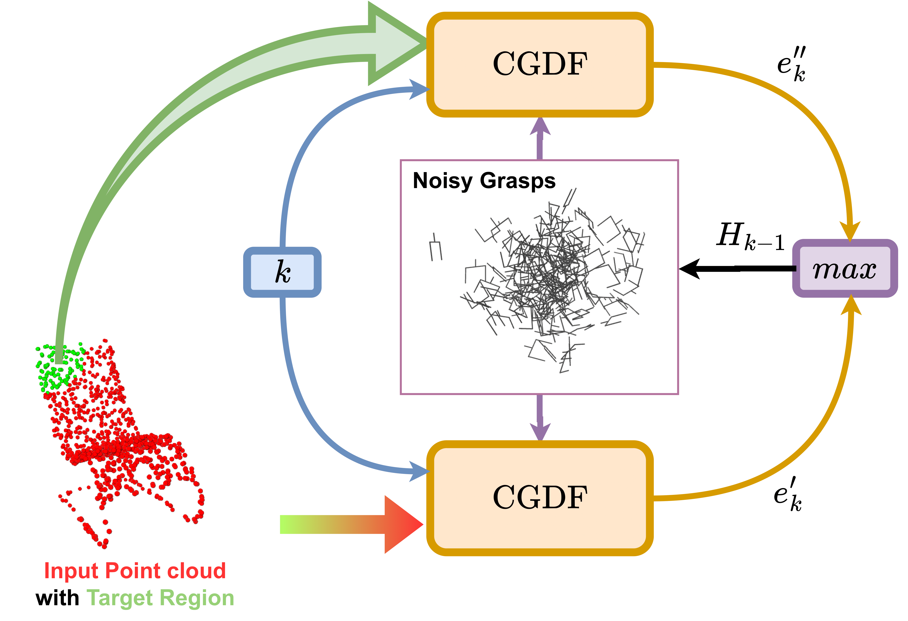

Part Guided Diffusion

Part-guided diffusion works by utilizing the energy values \(e^{'} \) and \(e^{''} \)
predicted by the trained
EBM \(\mathbf{E_{\theta}} \) on \(P \) (pointcloud of the full object) and \(P_{t} \)
(target region pointcloud). \(e^{'} \) is calculated as \(\mathbf{E_{\theta}(H_{k}, 0, P)} \)
and \(e^{''} \) as \(\mathbf{E_{\theta}(H_{k}, 0, P_{t})} \) where \(H_{k} \) is the grasp pose with noise scale \(k\).
By taking the maximum
value of the energies, this strategy guides the grasp from a
random pose to a stable configuration near the target region.
During the inverse diffusion step, if the grasp \(H_{k} \) is near
the constrained region but collides with the full object or
is unstable, the energy \(e_{k}^{'} \) is higher, which makes \(H_{k} \) move
to a more stable pose. Conversely, if the grasp is stable but
is far from the constrained region, then \(e_{k}^{'} \) is higher, and
the grasp moves closer to the constrained region. Eventually,
the grasp moves to a pose where the energies for both \(P \)
and \(P_{t} \) are low, i.e. the grasp is on the constrained region
as well as stable.